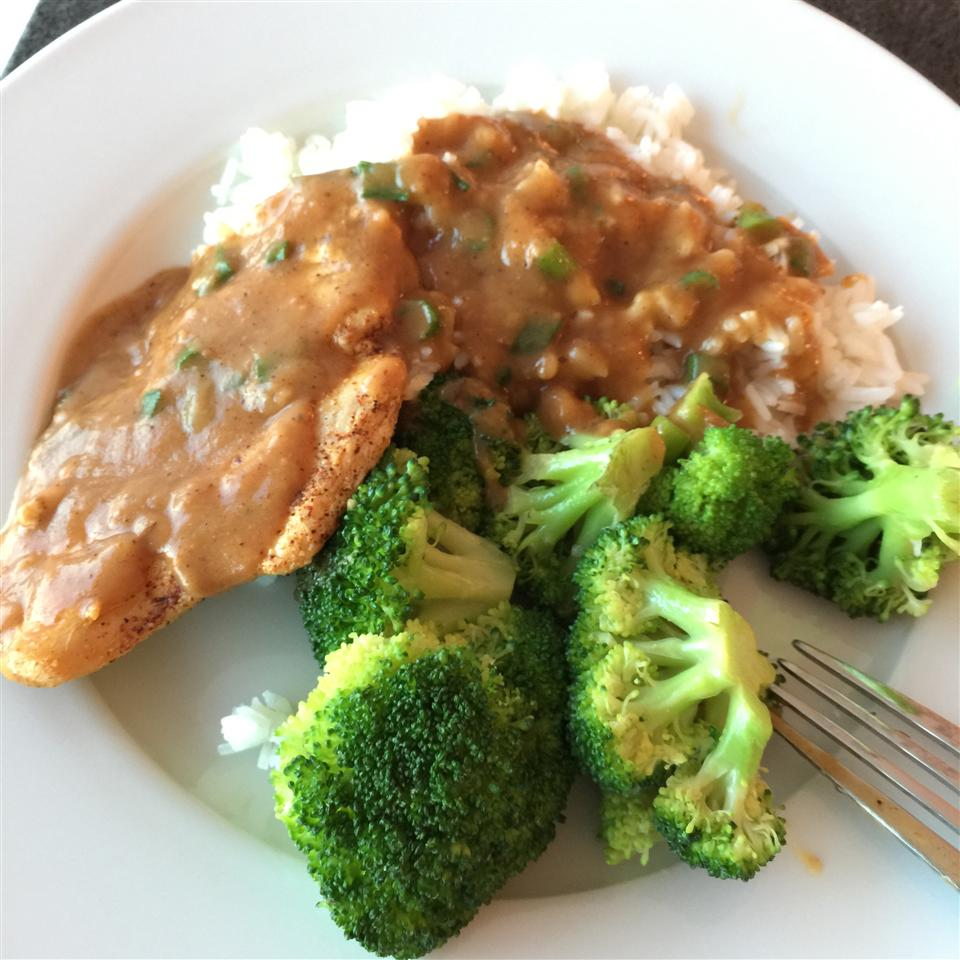

Chicken Breasts with Chipotle Green Onion Gravy

Ingredients
- 2 skinless, boneless chicken breast halves
- salt and fresh ground pepper to taste
- 1 tablespoon olive oil
- 2 tablespoons butter
- 1 tablespoon all-purpose flour
- ¾ cup chicken broth
- 2 tablespoons minced green onions
- ½ teaspoon chipotle chile powder, or more to taste
Steps
- Place chicken breast halves between two sheets of heavy plastic (resealable freezer bags work well) on a solid, level surface. Firmly pound chicken with the smooth side of a meat mallet to a thickness of 1/2-inch. Season with salt and pepper to taste.
- Heat olive oil in a skillet on high heat until it begins to shimmer, about 1 minute. Reduce heat to medium; cook chicken breasts until browned and no longer pink inside, about 5 minutes per side. Transfer cooked chicken to a warm plate and loosely cover with aluminum foil.
- Melt butter in the skillet; stir in flour and cook for about 2 minutes. Stir in chicken broth, scraping up any browned bits from the bottom of the pan; cook and stir until gravy begins to simmer and thicken, 1 to 2 minutes.
- Stir in green onions and chipotle chile powder.
- Return chicken breasts to the skillet and cook until heated through, 1 to 2 minutes.
Cooks' Notes
May substitute chicken stock for chicken broth. For thinner gravy, add more broth or stock.